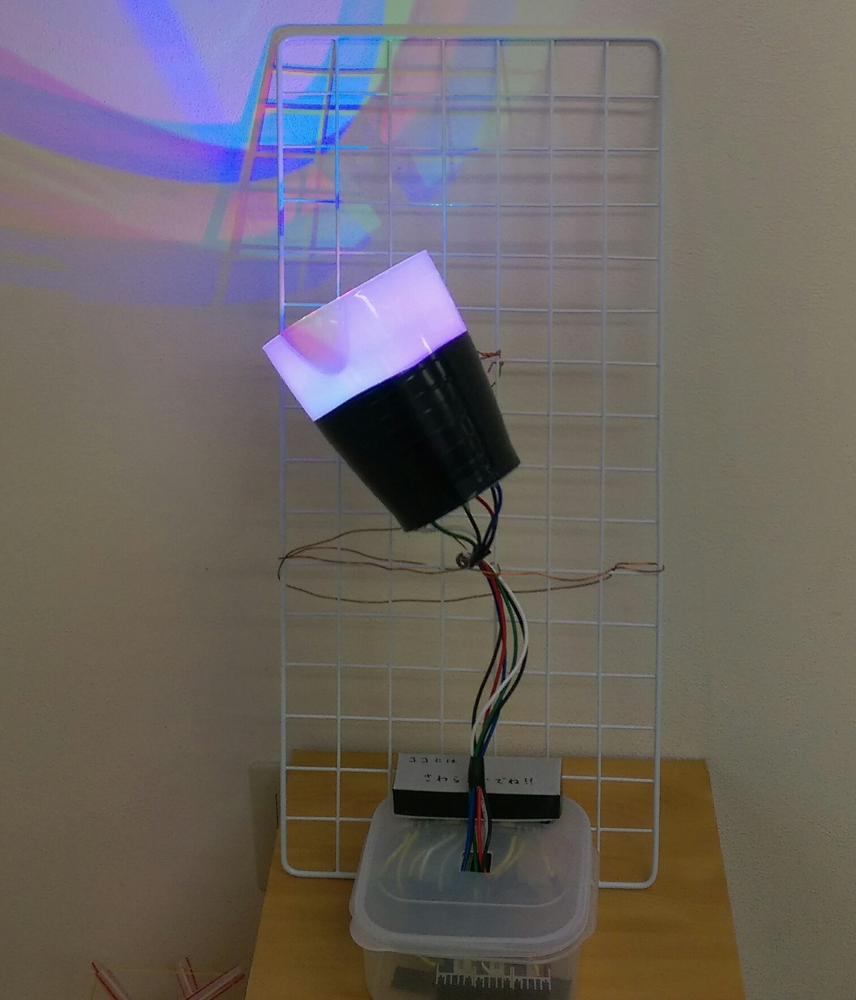
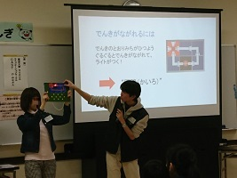
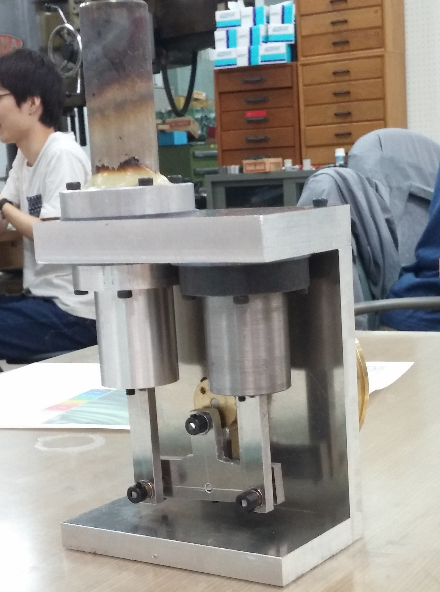
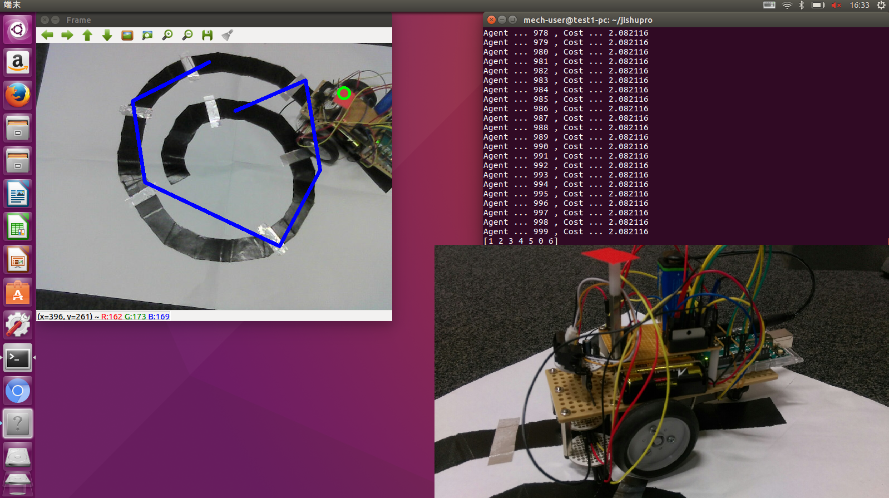
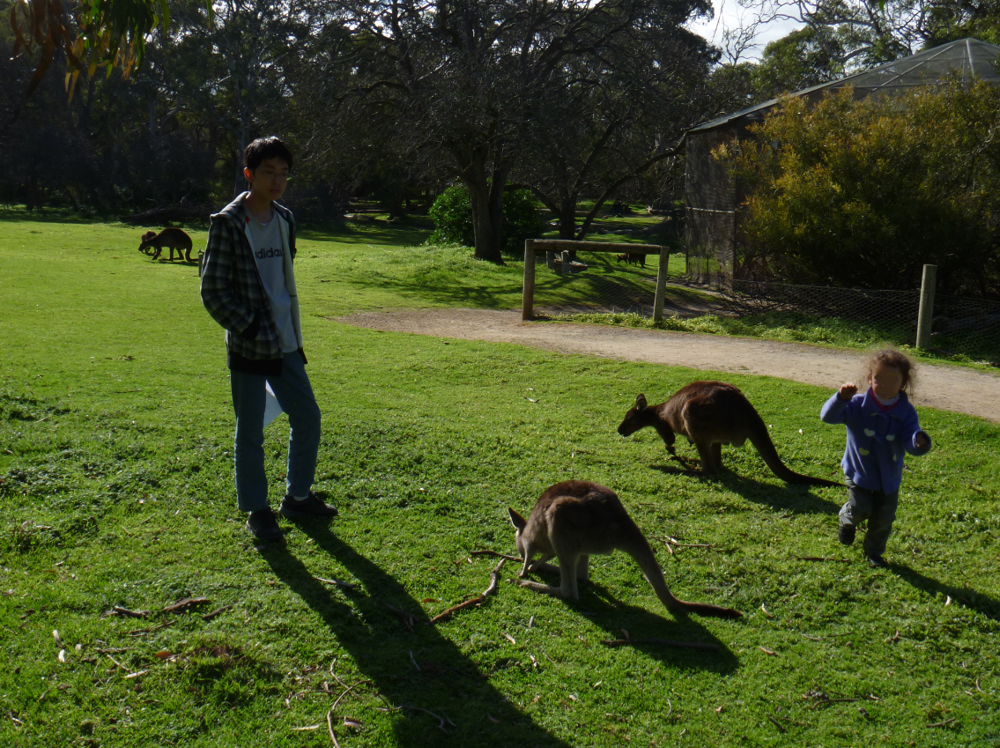
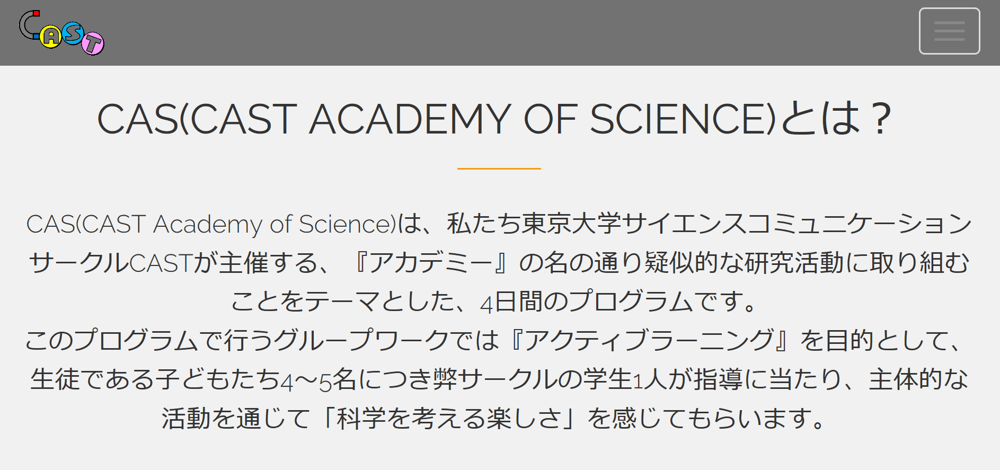

Portfolio
Project(as an organizer)
メインで関わったプロジェクト
サイエンスルーム(2017～2019)
サイエンスリンク交流会で自分が提案したイベントで、「一見普通の部屋に見えるが、実は科学的な要素が隠されていて、それを参加者に発見してもらう」という企画である。
第1回は、2017年の夏に一般社団法人 世界が憧れるアカデミーさんのイベントで2日間実施。
第2回は、2018年の春にサイエンスリンクフェスタで実施。パンフレットはこちら。
第3回は、2019年の秋に某所とのコラボ企画が進行中。
参考：企画のパンフレット
Space Balloon Project(2019)
風船に観測機器を取り付けて成層圏まで上げ、それを回収して解析するプロジェクト。
国際科学教育協会のもとで全国から集まった子供たちとともに取り組み、宮古島で打ち上げる。
自分は無線通信実験や、観測機器製作チームのメンターを担当した。
参考：webサイト
参考：リポジトリ
中央公園文化センター 子ども講座「東大生と科学実験！」(2016,2017)
東京都北区にある中央公園文化センターにて、「粉と粒のふしぎを楽しく学ぼう」「「ゆれる」のふしぎを探ろう」「親子で学ぶ電気のふしぎ」と題して3回にわたりイベントを実施した。
当時所属していたサークル東大CASTでは、様々な実験教室やサイエンスショーを行った。その中で自分がリーダーを務めたものの1つがこのイベントであり、学校の範囲を超えた最近の話題を取り入れたり手を動かすことで科学を実感してもらったりした。
宇宙サークルAgora(2018)
宇宙やプログラミング、教育に興味のある学生を対象にサークルを立ち上げ、運営や新歓などを行った。京都と東京を中心に勉強会や宇宙をテーマにしたプロジェクトを実施した。
参考：webサイト
機械系アドベントカレンダー(2018)
Qiitaのアドベントカレンダーをやってみたかったので、学科の人間に呼びかけ企画した。自分は「型で覚えるDeep Learningのライブラリ」と題した記事を書いた。たまにROSとかの記事も書いてます。
参考：機械系アドベント2018
卒論タイマー(2019)
ただの悪ふざけで作ったカウントダウンタイマーだが、学科の同期たちが面白がってコミット・拡散したためにオープンソースプロジェクトみたいになった。
参考：当時のページ
参考：リポジトリ（forkして締め切り日時を変えてお使いください。）
スターリングエンジン(2017)
大学の演習で製作。高さ20㎝程度の小型なタイプを設計。
最短経路探索ロボット(2017)
大学の自主プロジェクトで製作。ラインに沿ってロボットを走らせ、カメラによる色認識で銀テープの位置を把握し、アリコロニー最適化で巡回セールスマン問題を解くことで、銀テープのポイントを全て通る最短経路を求める。ロボットにはArduinoを用い、光センサーやモーターを取り付けた。
Project(as a member)
メンバーとして参加したプロジェクト
Science Study Tour to Adelaide(2012)
高校1年生の時、当時の小石川がCORE SSH校に指定され、夏休みに他のSSH校と合同で実施されたプログラム。
国際バカロレア(IB)Diplomaプログラムを展開しているGlenunga International High Schoolに滞在し、IB Diplomaの理数系授業を中心に参加することが目的である。
自分は志望動機書を提出し、校内面接を受けて参加した。事前学習として、英語による理数講座や論文作成・データ解析講座を受講した。2週間の研修の中で、アデレードの家庭にホームステイしながら、大学訪問(Flinders University,Adelaide University)、授業体験、Science Fair(National Science Weekイベント)への参加などを経験した。帰国後は、授業レポートと自分で課題を設定する研究レポートを提出した。
参考：小石川のSSH通信
CAS -CAST Academy of Science-(2018)
当時所属していたサークルCASTの4日間にわたる自主イベント。
アクティブラーニングをテーマとし、子供たちにチームで課題に取り組み、実験や発表まで行ってもらった。
課題として、目標に対して方法を選択するものと、目標に対する方法を考えるものの大きく2つを用意した。
自分は工作によるアイスブレイクと、与えられたパーツを組み合わせてからくり装置を完成させる課題をメインで担当した。
Space Robot Contest(2017～2019)
当時アルバイトをしていた子どもの理科離れをなくす会が毎年実施しているロボットコンテスト。
1次予選は全国各地の教室で行われ、2次予選・決勝トーナメントは主に大阪で行われる。
決勝には毎年JAXAの方をお招きしてコメントをいただいている。
自分はその運営の補助や審判、体験企画などを担当した。
参考：webサイト
国内・国際合宿(2017～2019)
当時アルバイトをしていた子どもの理科離れをなくす会が毎年実施している科学合宿。
春と夏に行う国内合宿と、アジアを中心とした複数の国が集まって夏に行う国際合宿がある。
国内合宿では、小中学生を対象にドローンや野外ロボット、Excelでのデータ解析などを教えた。
国際合宿では、ロボットプログラミングの基礎を複数の国の生徒相手に英語で教え、メンターとして文化背景の違う子どもたちと寝食を共にした。
参考：webサイト
Publication
論文など
End-to-End Learning Using Cycle Consistency for Image-to-Caption Transformations(2019)
一貫性ロスと微分可能サンプリングの導入によって、画像とキャプションの相互変換を学習させることで、生成されるキャプションの制度を向上させる研究